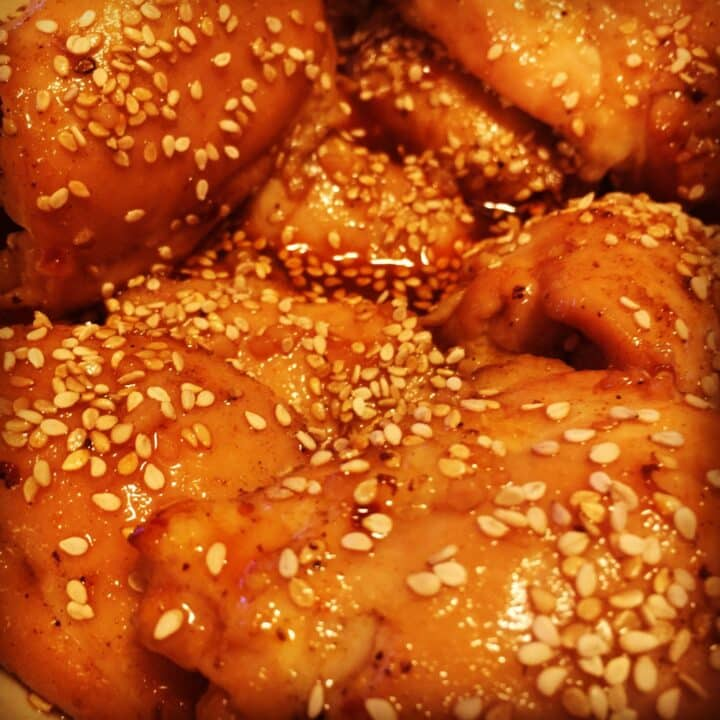

Instant Pot Fireworks

I named this recipie Fireworks Chicken because the slightly spicy and pleasantly sweet flavor pops in your mouth so wonderfully,
it calls for a celebration worthy of a holiday.
- 2 pounds of chicken thighs (I used boneless, skinless which I suggest)
- Cajun seasoning, for rubbing on chicken
- 2 tbsp of vegetable oil
- 1 cup of chicken broth (1 tsp of Chicken Better Than Bouillon + 1 cup of water)
- 1 cup of Hot Sauce (I used Frank’s Red Hot)
- 1.5 cups of light brown sugar
- 1/4 cup of apple cider vinegar
- 1 tbsp of crushed garlic
- 1/2 tsp – 1 tsp of crushed red pepper flakes
- 1/2 cup of honey
- Sesame seeds, for topping
-
Lightly rub each piece of chicken with the cajun seasoning – but don’t overdo it! A gentle rub is enough.
-
Add the oil to the Instant Pot and hit “Sauté” and “Adjust” so its on the “More”/”High” setting.
When it reads “Hot”, add the chicken a few pieces at a time and cook for 45-60 seconds on each side to lightly sear.
The chicken should NOT be fully cooked when done.
Remove chicken and place on a plate lined with a paper towel to absorb excess oil and set aside but keep the “Sauté” setting as it is because we’re gonna make the sauce!
-
Add the chicken broth and deglaze (scrape) the bottom of the pot so the excess brown cajun seasoning blends in with the broth and then add the hot sauce, brown sugar, apple cider vinegar, garlic and red pepper flakes.
Stir and bring to a boil so the sugar infuses nicely into the liquid. After boiling for a few moments, hit the “Keep Warm/Cancel” button
-
Remove 1 cup worth of the sauce and place in a little bowl or pyrex measuring cup, add the honey to it, mix and place in the fridge to cool.
We will use this to glaze our chicken later
-
Add the seared chicken back to the pot with the rest of the sauce and layer so it covers the bottom.
Secure the lid and hit “Manual” or “Pressure Cook” High Pressure for 10 minutes (and pre-heat your own to broil). Follow with a quick release when done
-
You can either discard the sauce in the pot that the chicken cooked in or refrigerate/freeze for making it again in the future
-
Carefully transport and place the chicken onto a baking sheet lined with foil, remove the reserved sauce from the fridge and, using a basting brush,
generously glaze each piece with it (the sauce shouldn’t be too thick – just enough to nicely glaze piece of chicken and you’ll still have some leftover for the final step).
Sprinkle sesame seeds over each piece of chicken when done
-
Pop the chicken into the oven for about 3-5 minutes (3 minutes was perfect for me as I use a gas one – just watch it and make sure it doesn’t burn – a nice lightly brown is what we want). Transfer to a serving dish when out of the oven
-
Drizzle/pour the rest of the reserved sauce over the chicken and add more sesame seeds if you desire
-
Enjoy!